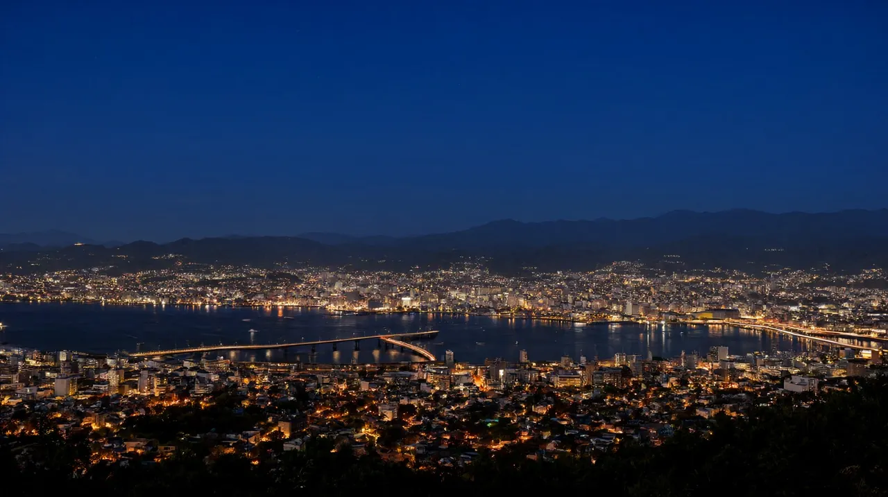

나가사키 여행 가이드
세계 신3대 야경과 짬뽕, 하우스텐보스를 묶는 규슈 서부 역사 항구 도시

확인하지 못한 값은 '확인 필요'로 남겼고, 출처 이름은 괄호로 달았습니다. 엔화 환산은 2026-10-21 시장 중간환율 100엔 837.70원(환율노트) 기준의 약 값입니다. 현찰 환전은 수수료 때문에 이보다 비쌉니다.
이나사야마의 야경, 오우라 천주당과 26성인 기념관 같은 기독교 역사 유적, 하얀 국물 짬뽕과 카스텔라, 기차로 닿는 하우스텐보스까지 한 도시에서 묶입니다. 인천 직항은 가을에 화·목·토, 겨울에는 월요일이 더해져 주 4회입니다.
- 도시: 나가사키 (규슈 서북부, 나가사키현의 중심 항구 도시)
한눈에 보기
| 항목 | 내용 | 근거 |
|---|---|---|
| 추천 일수 | 2박 3일(시내만) ~ 3박 4일(하우스텐보스나 군함도 추가). 후쿠오카와 묶으면 4박 5일 | 직항 요일이 정해져 있어 여행 날짜를 요일에 맞춰야 합니다 (나가사키공항 공식 시간표) |
| 비행시간 | 인천 출발 직항 약 1시간 30분 | 가을 10:35~12:05, 겨울 08:00~09:30의 시각 차 (공항 공식 시간표, 나가사키현 서울사무소 발표) |
| 1인 총예산 | 약 40~75만원 (2박 3일, 항공 포함) | ‘총예산 예시’ 항목 참고. 항공과 숙박은 출처 없는 가정치입니다 |
| 아이 적합도 | 보통~높음 | 트램으로 이동하기 쉽고 하우스텐보스는 3세 이하 무료입니다. 오우라 천주당과 글로버 가든 구역은 언덕과 계단이 많습니다 (각 시설 공식, 비공식 정리) |
| 환율 기준 | 100엔 = 837.70원 (2026-10-21) | 환율노트 |
규슈 권역 페이지의 나가사키 행과 같은 값입니다. 직항은 대한항공 코드쉐어(겨울 주 4회), 비행시간 약 1시간 30분, 2박 3일~3박 4일, 1인 약 40~75만원입니다.
이 도시가 맞는 사람
맞는 유형
- 역사와 이국 문화를 좋아하는 가족. 오우라 천주당, 26성인 순교자 기념관, 글로버 가든, 데지마를 트램으로 돌 수 있습니다.
- 짬뽕과 사라우동, 카스텔라를 먹으러 가고 싶은 가족. 나가사키 짬뽕은 맵지 않은 하얀 국물입니다.
- 세계 신3대 야경으로 불리는 이나사야마 전망을 보고 싶은 가족 (로프웨이 왕복 어른 1,900엔, 나가사키현 관광연맹 공식).
- 규슈 일정에 하우스텐보스를 한 번에 넣고 싶은 가족.
덜 맞는 유형
- 대형 롤러코스터 중심의 놀이공원을 기대하는 가족. 하우스텐보스는 유럽식 거리, 꽃, 조명 장식이 중심인 리조트형 시설입니다 (공식 소개).
- 쇼핑과 밤 번화가가 중심인 여행. 밤에 여는 가게가 적은 조용한 항구 도시입니다 (비공식 정리).
- 여행 요일이 직항 요일과 맞지 않는 경우. 후쿠오카를 거쳐도 되지만 이동 시간이 늘어납니다.
공항에서 시내까지
직항 노선 (2026-10-22 확인)
| 항공사 | 편명 | 인천 출발 → 나가사키 도착 | 나가사키 출발 → 인천 도착 | 운항 요일 | 기간 |
|---|---|---|---|---|---|
| 대한항공 (델타·JAL·아시아나 코드쉐어) | 예약 시 확인 | 10:35 → 12:05 | 13:20 → 14:55 | 화·목·토 (주 3회) | 2026-10-24까지 (나가사키공항 공식 시간표) |
| 대한항공 | 예약 시 확인 | 08:00 → 09:30 | 10:40 → 12:20 | 월·화·목·토 (주 4회) | 2026-10-25 ~ 2027-03-27 (나가사키현 서울사무소 발표) |
- 가을 시간표는 나가사키공항 공식 월간 시간표에서, 겨울 주 4회 증편(월요일편 추가, 140석급 소형기)은 나가사키현 서울사무소 발표를 보도한 국민일보 등에서 확인했습니다.
- 부산-나가사키는 2026년 10월 현재 공항 공식 시간표에 노선이 없습니다. 9월 표에는 운휴로 적혀 있었습니다. 에어부산이 2026년 3월에 부정기편을 주 5회로 늘린다는 보도(연합뉴스)가 있었으나 지금 운항하는지는 확인 필요입니다.
- 직항 요일이 아니면 후쿠오카나 구마모토로 들어와 육로로 오는 방법이 현실적입니다. 아래 표를 보세요.
나가사키공항에서 시내까지
| 노선 | 소요시간 | 요금(편도, 어른) | 막차·메모 | 추천 대상 |
|---|---|---|---|---|
| 공항 리무진, 신치중화가·나가사키역 앞 경유 | 약 40~45분 (공항 공식 시간표) | 1,400엔(약 11,700원), 소아 700엔 (나가사키현영버스 공식) | 좌석 예약 불필요, 내릴 때 후불. 교통 IC 카드 사용 가능. 밤 21시대까지 운행 (공식 시간표) | 대부분의 가족 |
| 공항 리무진, 우라카미·평화공원 경유 | 약 40~50분 | 1,400엔, 소아 700엔 (공식) | 평화공원과 원폭자료관 쪽 숙소에 편함 | 평화공원 쪽 숙소 |
| 택시 | 약 40~50분 | 확인 필요 | 확인 필요 | 아이가 지쳤거나 짐이 많을 때 |
- 리무진은 휠체어 승하차 설비가 없는 차량이라 휠체어 이용자는 나가사키현 유니버설 관광 센터에 미리 문의하라고 안내합니다 (나가사키현영버스 공식).
- 탑승 2시간 전 버스를 이용하라는 안내가 있습니다 (나가사키현영버스 공식).
후쿠오카·구마모토를 거쳐 오는 방법
| 수단 | 구간 | 소요시간 | 요금(편도, 어른) | 메모 |
|---|---|---|---|---|
| 릴레이 카모메 + 니시큐슈 신칸센 카모메 | 하카타역 → 타케오온센역 환승 → 나가사키역 | 약 1시간 30분~1시간 50분 (비공식 시간표) | 자유석 약 5,960엔, 지정석 약 6,490엔 (비공식 운임표, 2026-03) | 타케오온센역에서 같은 승강장 맞은편 열차로 갈아탑니다 (JR 규슈 공식). 레일패스 지정석은 일본 도착 후 역 창구에서 예약합니다 (공식) |
| 고속버스 | 하카타·텐진 버스터미널 → 나가사키 | 약 2시간 20분~2시간 30분 (비공식) | 확인 필요 (비공식 2,900엔 안팎) | 좌석 지정제라 예약을 권합니다 |
| 구마모토 → 나가사키 | 신칸센과 버스 조합 | 확인 필요 | 확인 필요 | 규슈를 가로지르는 이동이라 시간이 깁니다 |
- 나가사키역에서 시내 관광지까지는 노면전차(트램)로 연결됩니다. 어느 구간이든 어른 150엔, 소아 80엔입니다 (나가사키 전기궤도 공식).
숙소 권역
가격대는 모두 출처 없는 가정치입니다. 3인이 쓰는 방은 더 비쌀 수 있습니다.
| 권역 | 장점 | 단점 | 1박 가격대 (가정치) | 적합 동행 |
|---|---|---|---|---|
| 나가사키역 앞 | 신칸센, JR, 공항 리무진 터미널이 붙어 이동이 가장 편함 | 역 앞 상권이 한적한 편 (비공식 정리) | 비즈니스 호텔 1인 약 1~2만원, 중급 방 1개 약 5~8만원 | 첫 방문 가족, 짐이 많은 일정 |
| 신치중화가·하마노마치 | 짬뽕, 사라우동, 카스텔라 가게와 쇼핑가, 트램 정류장이 몰려 있음 | 관광객과 차량이 많음 (비공식 정리) | 중급 방 1개 약 6~10만원 | 먹거리 중심, 트램 일정 |
| 데지마·긴잔초 | 데지마 유적과 시내 중심이 걸어서 닿고 트램 환승이 편함 | 호텔 수가 많지 않음 (비공식 정리) | 중급 | 데지마와 박물관 위주 |
| 오우라·남야메테 (언덕) | 오우라 천주당과 글로버 가든이 가깝고 바다 전망 | 짐을 들고 오르막을 걸어야 함 (비공식 정리) | 상급 리조트형 | 천주당 중심 일정, 전망을 원하는 가족 |
추천 일정
| 일정 | 요약 |
|---|---|
| 2박 3일 | 1일차 오전 도착(가을 12:05, 겨울 09:30), 신치중화가에서 짬뽕 점심, 오후에 오우라 천주당과 글로버 가든. 2일차 오전 26성인 기념관과 평화공원, 오후 데지마 또는 이나사야마 로프웨이, 저녁 야경. 3일차 오전 시내 마무리 후 공항 (귀국편 가을 13:20, 겨울 10:40) |
| 3박 4일 | 2박 3일에 하루를 더해 하우스텐보스(나가사키역에서 JR 약 1시간 30분) 또는 군함도 상륙 크루즈(약 3시간) |
| 후쿠오카 2박 + 나가사키 (4박 5일) | 1~2일차 후쿠오카, 3일차 오전 신칸센으로 나가사키 이동, 나가사키 1박(천주당과 야경), 마지막 날 직항 귀국 |
| 구마모토 연계 | 구마모토 2박 + 나가사키 2박 등. 구마모토-나가사키 이동 시간은 확인 필요 |
- 귀국편이 가을 13:20, 겨울 10:40 출발이라 마지막 날은 오전까지만 관광할 수 있습니다. 겨울에는 체크아웃 후 바로 공항으로 가는 쪽이 안전합니다.
- 나가사키만 다루는 일정 글은 아직 없어 위 표는 구성 제안입니다. 후쿠오카와 묶을 때는 후쿠오카 3박 4일 가족 일정을 참고하세요.
아이 동반 코스
| 시설 | 요금과 시간 | 예약 | 아이 메모 |
|---|---|---|---|
| 26성인 순교자 기념관 (니시자카) | 500엔 (어린이 요금은 확인 필요), 9:00~17:00 (나가사키현 관광 사이트) | 불필요 | 전시 중심이라 비 오는 날 대안. 옆 공원에 순교 기념비가 있습니다 |
| 오우라 천주당 (국보) | 성인 1,000엔, 중고생 400엔, 초등 300엔 (박물관 입장 포함). 3~10월 8:30~18:00, 11~2월 8:30~17:30 (최종 입장 30분 전, 공식) | 불필요 | 입구까지 긴 계단이라 유모차와 휠체어는 도움이 필요합니다. 실내 촬영 금지 |
| 이나사야마 로프웨이 | 왕복 어른 1,900엔, 초등 950엔, 편도 어른 1,040엔 (2026-04-01 개정, 관광연맹 공식). 9:00~22:00, 상행 막차 21:00 | 불필요 | 미취학 아동 요금은 공식 페이지 확인. 시내 호텔과 로프웨이를 잇는 무료 순환버스가 있고 당일 예약합니다 (공식) |
| 군함도(하시마) 상륙 크루즈 | 어른 3,600엔 + 견학시설 이용료 650엔, 초등 1,800엔 + 320엔 (다카시마해상교통, 2027-03까지 요금) | 인터넷 예약 필수, 탑승일 현금 결제 (공식) | 4세 이상 참가. 약 3시간. 파도가 높으면 상륙 없이 선상 관람만 하고 견학료는 환불 (공식) |
| 하우스텐보스 | 1일권 어른 7,600엔, 중고생 6,600엔, 초등 5,000엔, 4세~취학 전 3,800엔, 3세 이하 무료 (공식) | 온라인 구매 권장, 특정일은 요금 변경 (공식) | 유럽식 거리, 꽃, 조명 장식. 나가사키역에서 JR 약 1시간 30분 (공식) |
- 오우라 천주당과 글로버 가든 구역은 계단이 많습니다. 유모차는 트램 정류장까지는 괜찮지만 언덕 구간에서는 도움이 필요합니다 (비공식 정리).
맛집 시간대
가격대는 비공식 정리입니다.
| 시간대 | 추천 | 가격대 | 예약 |
|---|---|---|---|
| 아침 | 호텔 조식이나 편의점, 카스텔라 가게 (후쿠사야, 쇼오켄, 분메이도 등) | 확인 필요 | 불필요 |
| 점심 | 신치중화가의 원조 시카이로, 코잔로의 짬뽕(특상 1,500엔 안팎). 사라우동 원조도 시카이로 | 1인 약 1,000~1,500엔 | 시카이로와 코잔로는 대기가 흔함 |
| 저녁 | 데지마와 신치 주변의 이자카야, 중화요리 | 1인 약 2,000~4,000엔 | 확인 필요 |
| 야식 | 밤에 여는 가게가 적어 편의점이 현실적 | 확인 필요 | 확인 필요 |
- 나가사키 짬뽕은 맵지 않은 하얀 국물이라 한국식 매운 짬뽕과 달리 아이와 먹기 쉽습니다 (비공식 정리).
- 카스텔라는 16세기 포르투갈 무역으로 들어온 과자로 알려져 있고, 후쿠사야(1624), 쇼오켄(1681), 분메이도(1900)를 3대 가게로 꼽습니다 (나가사키시 소개, 비공식 정리).
근교 당일치기
| 목적지 | 이동 시간 | 요금 | 비고 |
|---|---|---|---|
| 하우스텐보스 (사세보시) | 나가사키역에서 JR 구간쾌속 약 1시간 30분, 하카타에서 특급 약 1시간 45분 (JR 규슈·하우스텐보스 공식) | 1일권 어른 7,600엔부터. JR 왕복과 1일권 교환권 묶음 '엔조이! 하우스텐보스 킷푸'가 있음 (JR 규슈 공식) | 하우스텐보스역에서 도보 약 5분. 영업시간이 날짜마다 달라 방문 전 공식 페이지 확인 |
| 군함도(하시마) 크루즈 | 나가사키항에서 약 3시간 (09:10, 14:00 출항, 다카시마해상교통) | 어른 약 4,250엔 (3,600 + 650) | 하시마와 옆 섬 다카시마를 돌고 상륙. 예약제 |
| 운젠·시마바라 | 철도와 버스 조합 (확인 필요) | 확인 필요 | 운젠 온천, 시마바라성. 7월 지진 때 시마바라반도 일부에 피해 보고가 있었음 (시 공식 페이지, 비공식) |
총예산 예시
기준: 2박 3일, 가족 3인(성인 2, 초등 1). 환율 100엔 837.70원(2026-10-21). 항공과 숙박은 출처 없는 가정치이고 금액은 모두 약 값입니다.
| 항목 | 금액 (가족 3인 합계) | 기준 |
|---|---|---|
| 항공 | 약 75~135만원 (1인 왕복 약 25~45만원) | 인천-나가사키 직항. 시즌 변동이 커서 가정치. 후쿠오카 LCC 왕복으로 바꾸면 더 쌀 수 있음 |
| 숙박 | 약 12~20만원 (2박, 방 1개) | 1박 약 6~10만원 가정, 중급 호텔 기준 |
| 식비 | 약 17.6~27.6만원 (21,000~33,000엔) | 1인 1일 3,500~5,500엔 × 2일 × 3인 |
| 교통 | 약 9.5만원 (11,400엔) | 공항 리무진 왕복 1,400엔 × 2 × 3인 = 8,400엔, 트램 1일권 2일분 3,000엔(어른 600 × 2 + 소아 300 × 2) (공식 요금) |
| 입장료 | 약 6.7만원 (8,050엔) | 오우라 천주당 2,300엔 + 26성인 기념관 1,000엔 + 이나사야마 왕복 4,750엔 (공식 요금) |
| 합계 | 약 121~199만원 | 계산상 1인 약 40~66만원. 허브 표기의 상한 75만원은 선물과 수하물 여유를 둔 편집 판단 |
| 하우스텐보스 추가 | + 약 16.9만원 (20,200엔) | 1일권 어른 7,600엔 × 2 + 초등 5,000엔 (공식). 넣으면 1인 약 46~72만원 |
- 합계에 군함도 크루즈, 선물, 환전 수수료, 위탁수하물은 들어 있지 않습니다.
- 항공 가격은 변동이 커서 금액 대신 범위만 적었습니다. 위탁수하물과 좌석 지정 비용을 넣은 총액으로 비교하세요.
- 계산기: 예산 계산기 (2차 개발 예정)
현지 팁·주의
- 트램은 어느 구간이든 어른 150엔, 소아 80엔입니다. 1일권(어른 600엔, 소아 300엔)은 전차 안에서 팔지 않으므로 미리 사야 합니다. 교통 IC 카드나 카드 결제로 환승하면 두 번째 승차가 무료인 구간이 있습니다 (나가사키 전기궤도 공식).
- 언덕이 많은 도시입니다. 편한 신발과 가벼운 짐을 권합니다 (비공식 정리).
- 오우라 천주당은 실내 촬영이 금지이고 조용한 관람이 원칙입니다. 기도하는 장소이니 모자를 벗는 배려가 필요합니다 (공식).
- 하우스텐보스는 주말, 연휴, 겨울 크리스마스 등 특정일에 입장료가 오릅니다. 온라인 구매로 날짜별 가격을 먼저 확인하세요 (공식).
- 면세는 2026-11-01 구매분부터 환급 방식으로 바뀝니다. 자세한 내용은 면세 글을 보세요.
- 7월 28일 규모 7.1 지진의 진원은 구마모토현이었고 나가사키시 주요 관광지는 정상 운영 안내입니다 (재팬가이드, 비공식). 출발 전 권역 글의 확인 순서를 따르세요.
귀국 동선
- 체크아웃 후 나가사키역 앞 버스터미널에서 공항 리무진을 탑니다. 공항까지 약 40~45분입니다 (공항 공식 시간표).
- 귀국편이 가을 13:20, 겨울 10:40 출발입니다. 탑승 2시간 전 버스 이용 안내를 따르면 겨울은 이른 아침, 가을은 오전 11시 무렵 버스가 적당합니다 (공식 안내를 바탕으로 한 편집 판단).
- 면세 환급: 2026-11-01 이후 구매분은 계산대에서 세금 포함가를 내고, 출국할 때 세관 확인을 받은 뒤 환급받습니다. 구매 후 90일 이내 출국, 한 가게에서 하루 세금 제외 5,000엔 이상이 대상입니다 (일본 세관). 10월 31일까지 산 물건은 기존 방식입니다.
- 국제선 터미널의 면세 단말기 위치와 운영 시간은 확인 필요입니다. 위탁수하물을 맡기기 전에 절차를 끝내세요.
FAQ
질문 1. 인천에서 나가사키로 가는 직항이 있나요? 있습니다. 대한항공(델타·JAL·아시아나 코드쉐어)이 화·목·토 운항하고, 10월 24일까지는 인천 10:35 출발, 나가사키 12:05 도착입니다 (공항 공식 시간표). 10월 25일부터 2027년 3월 27일까지는 월요일이 더해져 주 4회, 인천 08:00 출발, 09:30 도착입니다 (나가사키현 서울사무소 발표).
질문 2. 부산에서 나가사키로 가는 직항이 있나요? 2026년 10월 현재 공항 공식 시간표에 부산 노선이 없습니다. 에어부산 부정기편 확대 보도(2026년 3월)가 있었으나 현재 운항 여부는 확인 필요입니다.
질문 3. 공항에서 시내까지 얼마나 걸리나요? 공항 리무진으로 나가사키역 앞까지 약 40~45분이고 어른 1,400엔, 소아 700엔입니다 (나가사키현영버스 공식). 예약은 필요 없고 내릴 때 요금을 냅니다.
질문 4. 트램 요금은 얼마인가요? 어느 구간이든 어른 150엔, 소아 80엔입니다 (나가사키 전기궤도 공식). 여러 번 타면 1일권(어른 600엔, 소아 300엔)이 유리하지만 전차 안에서는 팔지 않습니다.
질문 5. 하우스텐보스 입장료는 얼마인가요? 1일권이 어른 7,600엔, 중고생 6,600엔, 초등 5,000엔, 4세~취학 전 3,800엔, 3세 이하 무료입니다 (공식). 주말과 연휴 등 특정일은 오르고, 1.5일권과 2일권은 현장에서만 팝니다.
질문 6. 군함도는 어떻게 가나요? 나가사키항에서 상륙 크루즈를 탑니다. 다카시마해상교통 기준으로 어른 3,600엔 + 견학시설 이용료 650엔, 4세 이상, 인터넷 예약제입니다 (공식). 파도가 높으면 상륙 없이 선상 관람만 하고 견학료를 환불받습니다.
질문 7. 7월 지진 이후 나가사키는 안전한가요? 7월 28일 규모 7.1 지진의 진원은 구마모토현이었고 나가사키시 주요 관광지는 정상 운영 안내입니다 (재팬가이드, 비공식). 규슈 신칸센은 9월 18일 전 구간 재개, 지진 영향 지역 철도는 10월 13일까지 재개됐습니다. 출발 전 공식 링크로 다시 확인하세요. 순서는 구마모토 지진 이후 현황에 있습니다.
관련 글
| 우선순위 | 글 | 연결 이유 |
|---|---|---|
| 1 | 규슈 권역 가이드 | 같은 권역 전체 비교 |
| 2 | 후쿠오카 여행 가이드 | 후쿠오카와 묶는 일정의 기준 |
| 3 | 구마모토 여행 가이드 | 구마모토 연계, 지진 이후 현황 |
| 4 | 구마모토 지진 이후 현황 | 7월 지진 이후 상황 확인 |
| 5 | 2026년 11월 일본 면세 환급 절차 | 귀국 동선 |
| 6 | 후쿠오카 3박 4일 가족 일정 | 후쿠오카 연계 일정 |
다른 도시 비교
| 도시 | 비교 포인트 | 상태 |
|---|---|---|
| 후쿠오카 | 공항에서 시내까지 가깝고 직항이 많아 나가사키와 묶기 좋음 | 후쿠오카 여행 가이드 |
| 구마모토 | 성, 아소, 구로카와를 렌터카로 잇는 일정. 지진 이후 현황 포함 | 구마모토 여행 가이드 |
| 벳푸 | 지옥순례와 온천 도시. 직항은 동계 한정 | 벳푸 여행 가이드 |
확인 필요 항목
- 부산-나가사키 직항의 현재 운항 여부 (에어부산 부정기편, 공식 시간표에는 부산 노선 없음)
- 대한항공 겨울 증편의 편명, 요금, 2027년 3월 이후(하계) 편성
- 하카타-나가사키 신칸센의 공식 운임과 시간표 (비공식 운임표 값 사용)
- 나가사키행 고속버스의 공식 운임과 시간표 (비공식 2,900엔 안팎)
- 공항 택시 요금, 국제선 터미널 면세 단말기 위치와 운영 시간
- 26성인 순교자 기념관 어린이 요금
- 이나사야마 로프웨이 미취학 아동 요금, 무료 순환버스 예약 방법
- 운젠·시마바라 이동 시간과 요금, 시마바라반도 지진 피해 현황
- 나가사키 숙박 가격 (가정치)
공식 출처
- 나가사키공항 월간 시간표: https://nagasaki-airport.jp/ko/flight/timetable
- 나가사키현영버스 공항 리무진: https://www.keneibus.jp/limousine/nagasaki
- 나가사키 전기궤도: https://www.naga-den.com/pages/653/ , https://www.naga-den.com/pages/299/
- 오우라 천주당: https://oura-church.jp/guide-kr/
- 26성인 순교자 기념관 (나가사키현 관광): https://www.discover-nagasaki.com/en/sightseeing/60788
- 군함도 상륙 크루즈 (다카시마해상교통): https://www.gunkanjima-cruise.jp/
- 하우스텐보스: https://www.huistenbosch.co.jp/ticket , https://www.huistenbosch.co.jp/access/train/
- JR 규슈 니시큐슈 신칸센 카모메: https://www.jrkyushu.co.jp/korean/train/shinkansen_kamome.html
- 이나사야마 로프웨이 (나가사키현 관광연맹): https://www.nagasaki-tabinet.com/guide/168
- 엔조이! 하우스텐보스 킷푸 (JR 규슈): https://www.jrkyushu-kippu.jp/fare/ticket/287
- 재팬가이드 긴급 안내: https://www.japan-guide.com/news/alerts.html
- 겨울 증편 보도: https://www.kmib.co.kr/article/view.asp?arcid=9000018107
- 비공식 참고: 환율노트 https://siseboda.com/fx/jpy